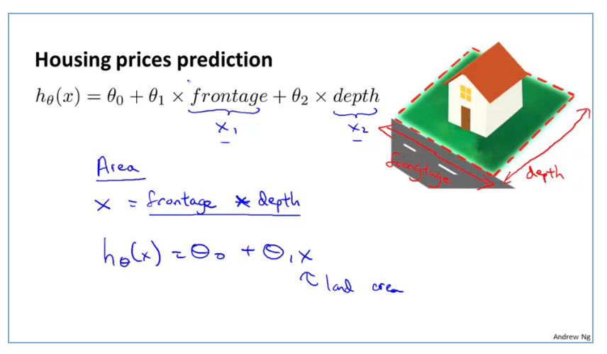
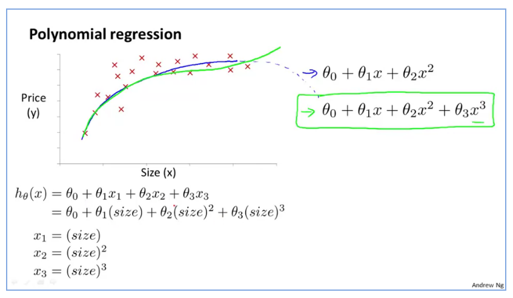
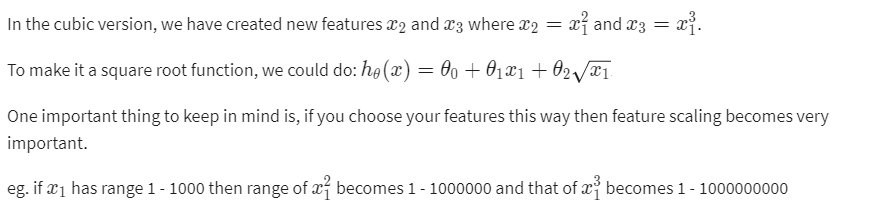

We can improve our features and the form of our hypothesis function in a couple different ways.
we can combine multiple features into one. For example, we can combine x1,x2 into a new feature x3 y taking x1x2.
Polynomial Regression.
Our hypothesis function need not be linear (a straight line) if that does not fit the data well.
We can change the behaviour or curve of our hypothesis function by making it a quadratic, cubic or square root function (or any other form).
For example, if our hypothesis function is hθ(x)= θ0 + θ1x1 then we can create additional features based on x1, to get the quadratic function hθ(x)= θ0 + θ1x1 + θ2x2^2 or the cubic function hθ(x)= θ0 + θ1x1 + θ2x2^2 + θ3x3^3.
